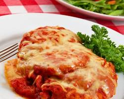
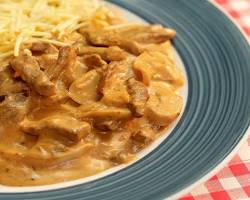
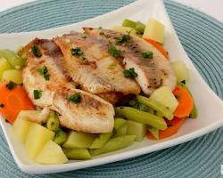
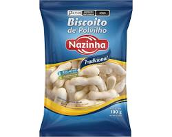
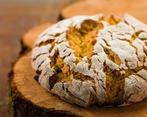
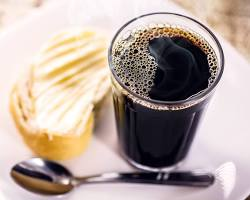
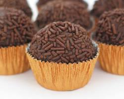
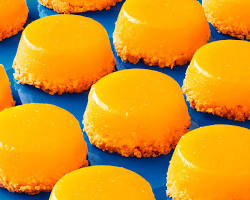
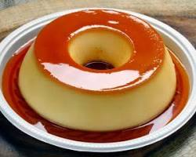

A feijoada é um prato brasileiro feito com feijão preto, bacon,
linguiça, carne seca e lombo suíno, cozidos com folha de louro
para dar sabor.É um prato clássico e muito apreciado.

Parmegiana
Para 2 pessoas
R$39,90
Delicioso filé à milanesa coberto com molho de tomate caseiro e
queijo mussarela derretido, acompanhado de arroz branco e batata
frita. Um clássico imperdível!

Strogonoff de Carne
Para 2 pessoas
R$36,90
Carne bovina cortada em tiras finas refogada em creme de leite com
champignons, acompanhada de arroz branco e batata palha. Um prato
cremoso e saboroso que agrada a todos.

Peixe Grelhado com Legumes Salteados
Para 1 pessoa
R$32,90
Um filé de peixe fresco grelhado na chapa, servido com legumes salteados no azeite e ervas finas. Uma opção leve e saudável para uma alimentação balanceada.
Pão de Queijo
Porção de 8 unidades
R$12,90
Pão de queijo tradicional mineiro, feito com polvilho doce, queijo
minas padrão e leite. Perfeito para um lanche rápido ou para
acompanhar o café da manhã.
Torresmo
Porção
R$18,90
Torresmo crocante feito com a pele do porco temperada com sal e
pimenta do reino. Um aperitivo irresistível para quem gosta de
sabores fortes.

Biscoito de Polvilho
Porção de 20 unidades
R$10,90
Biscoito crocante feito com polvilho doce, queijo parmesão e
erva-doce. Uma delícia para acompanhar o chá da tarde ou para
comer a qualquer hora do dia.

Broa de Milho
Unidade
R$5,90
Broa de milho tradicional mineira, feita com fubá, leite, queijo
minas padrão e erva-doce. Um pão úmido e saboroso que combina
perfeitamente com refeições ou lanches.
Suco de Laranja Natural
300ml
R$5,90
Suco de laranja natural feito com frutas frescas, sem adição de
açúcar ou conservantes. Uma bebida refrescante e saudável para
começar o dia ou para acompanhar as refeições.

Café Preto
Copo
R$3,50
Café preto feito com grãos 100% arábica, moídos na hora e coados
na prensa francesa. Um café encorpado e aromático para os amantes
da bebida.
Refrigerante Lata
350ml
R$4,90
Diversos sabores disponíveis (Coca-Cola, Fanta, Guarana
Antarctica, etc.).
Cerveja Long Neck
350ml
R$6,90
Cerveja gelada Brahma, Skol ou Antarctica. Perfeita para
acompanhar um churrasco ou um bate-papo com os amigos.

Brigadeiro
Porção
R$8,90
Brigadeiro tradicional feito com leite condensado, chocolate em pó
e manteiga. Uma sobremesa clássica e irresistível que agrada a
todos.

Quindim
Unidade
R$6,90
Quindim feito com gema de ovo, coco ralado e açúcar. Uma sobremesa
cremosa e saborosa com um toque tropical.

Pudim de Leite
Fatia
R$7,50
Pudim de leite condensado, leite e ovos. Uma sobremesa caseira
clássica que é sempre um sucesso.
Mousse de Maracujá
Taça
R$9,90
Mousse cremoso de maracujá feito com suco natural da fruta, leite
condensado e creme de leite. Uma sobremesa leve e refrescante.